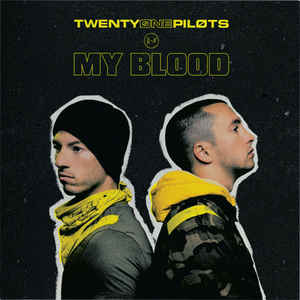
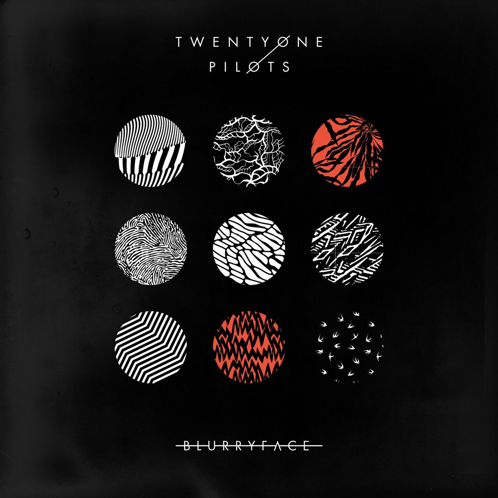

Personal highlights and why these tracks stand out to me.
Why I chose it: The line conveys a strong feeling of change. I really like it specifically because I love the series "Arcane", which the song was made for.

Why I chose it: I grew up listening to TOP with my best friends, so I love the theme of loyalty and brotherhood portrayed in this song.

Why I chose it: "Blurryface" was the first album that I heard of them, I really love the drum and piano in this song, makes a strong and passionate feeling that illustrates love.